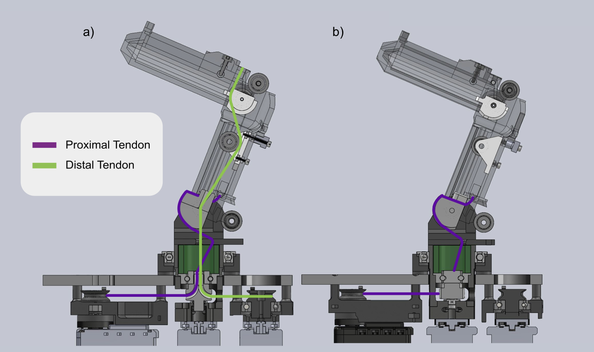
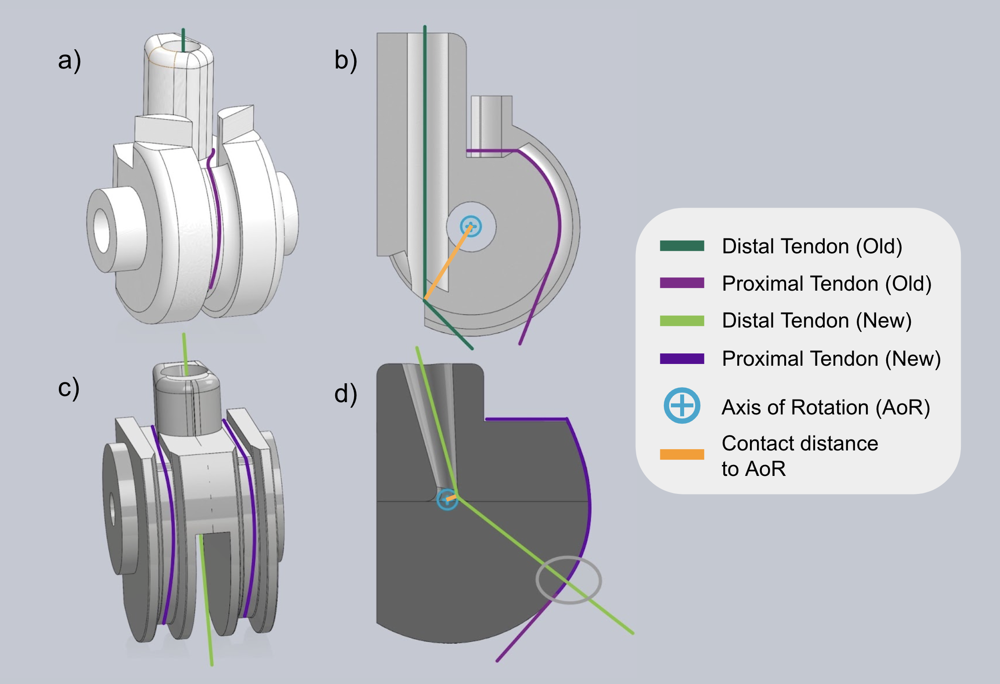
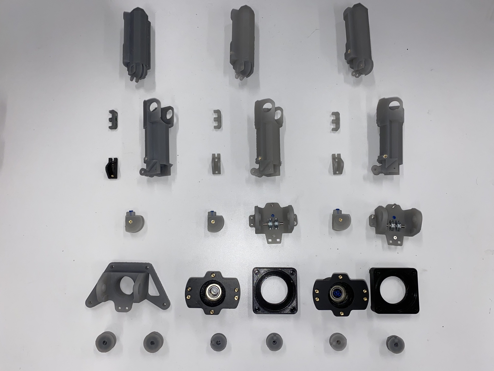
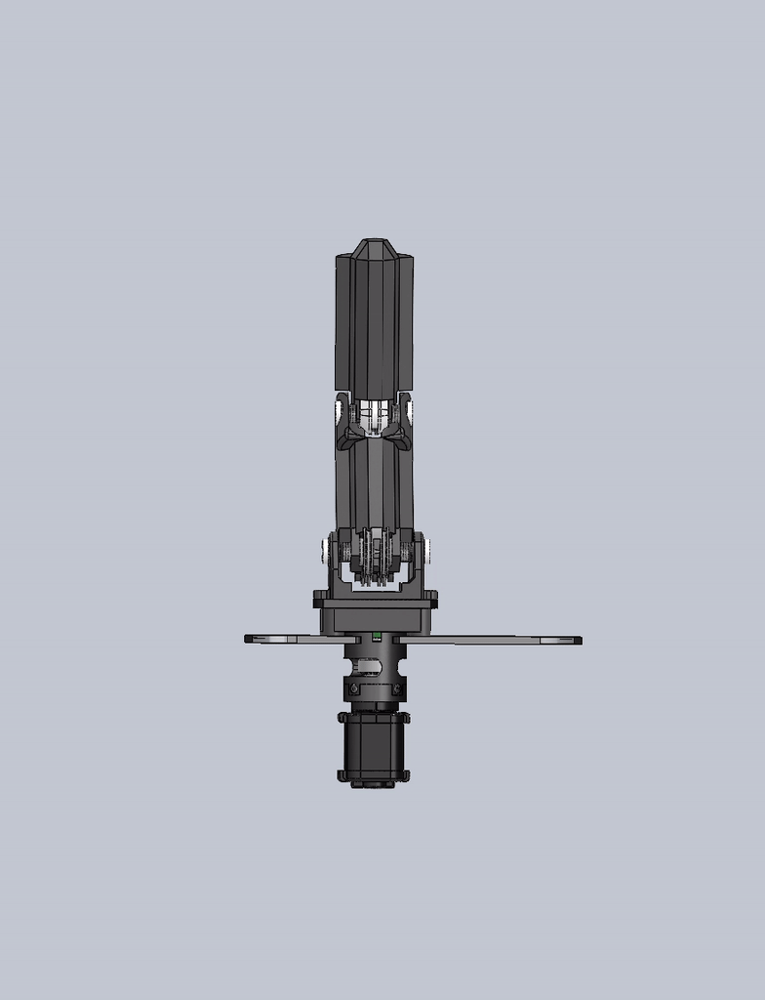
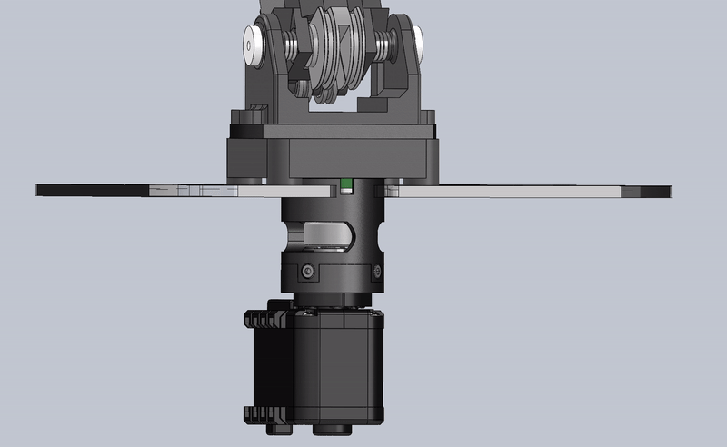

ROAM Hand 1
A tendon-driven robot hand, exploring proprioception in dexterous manipulation.
Description:
The ROAM Hand was developed as a hardware testbed to explore how proprioception can augment other sensing modalities, like tactile sensing and computer vision, in an effort to achieve dexterous manipulation.
The fingers are driven by tendons connected to servos inside the palm, with a load cell measuring the reaction torque of each motor, allowing us to sense the torque at each joint. This is robotic proprioception.
My Role
Redesign of tendon routing and pulley transmission to reduce friction and improve torque sensing. A key challenge I had to overcome was routing tendons in such a way each joint remains uncoupled.
Implementing firmware for position control and torque sensing. Integrating with ROS architecture.

Gallery





